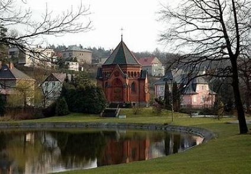

Památky obce Chuchelná
Zámek
Zámek nebo v dnešní době také Rehabilitační Ústav Hrabyně byl Lichnovský zámek, který po mnoha desetiletí sloužil jako lovecká a výletní rezidence Lichnovských. Zámek měl také park, který má dnes rozlohu 5,5 ha a jeho dnešní podoba vznikala někdy v polovině 19. století. Osázené dřeviny jsou většinou domácího původu. Za pozornost stojí rozložitý buk lesní červený, jehož kmen má ve výšce 1 m průměr 1,5 m. Kdysi zde Karel Max zřídil i růžovou zahradu. V sousedství byl založen ovocný sad a zeleninová zahrada. A protože Lichnovští patřili v Německu k předním šlechtickým rodům s dobrým vztahem k císařskému dvoru tak i do Chuchelná a jejich lesů jezdil ukojovat svoji loveckou vášeň i německý císař Vilém II.

Kostel Povýšení sv kříže
Kostel Povýšení sv kříže byl postaven na místě předchozího Římskokatolického kostela, který byl za 2 sv války zničen bombou až do základu. Chuchelničtí občané se ovšem nesmířili se zánikem svého kostela. Bohužel, doba nepřála nové výstavbě. Komunistický režim potlačoval církve, a zvláště katolickou, takže až v roce 1968, tedy v době demokratizace společnosti, byly zahájeny prvé kroky k výstavbě nového chrámu. Začaly se organizovat sbírky, vznikl projekt a 26. června 1969 byl na místě původní stavby vysvěcen základní kámen pro stavbu nového kostela. Bohužel v té době již začala nastupovat tzv. normalizace, čili pokus o návrat do poměrů před lednem 1968, takže celá věc usnula na dvacet let. Pádem komunismu koncem roku 1989 došlo okamžitě k oživení myšlenky stavby chrámu. Řídící výbor nechal základní kámen opětovně vysvětit, tentokráte 22. dubna 1990 na Velehradě u příležitosti návštěvy Svatého otce Jana Pavla II. v tehdejším Československu. A pak již práce pokračovaly svým standardním tempem: stavební povolení farnost získala v dubnu 1993 a ihned s ním se začalo stavět podle architektonického návrhu. Stavba, která vznikla, svým slohem zapadá do okolního prostředí, zarámovaného nedalekým mauzoleem, rybníkem a zámeckou zdí s parkem. Finančně se na stavbě podíleli nejenom domácí farníci, ale i věřící z okolních vesnic a ze sousedního Polska a též z Německa. První mši svatou sloužil a slavnostní vysvěcení chrámu Povýšení svatého Kříže uskutečnil olomoucký arcibiskup Jan Graubner dne 4. května 1996. Mše se zúčastnilo několik tisíc věřících, včetně rodáků žijících v Německu a v příhraničních obcích Polska. Velkou zásluhu na rychlé výstavbě architektonicky velmi kvalitní stavby měli hlavně místní občané, kteří pod vedením hlavního stavbyvedoucího Richarda Rataje a pod organizačním dohledem P. Antonína Kocurka, starosty obce a celého zastupitelstva bezplatně odpracovali 23 tisíc hodin.

Kaple sv kříže
Jedná se o kapli sv. Kříže s hrobkou rodiny knížat Lichnovských, která: se nalézá v parku u návesního rybníka ve středu obce. Popis památky náročnější romantizující centrální stavba z režného cihelného zdiva, která je neomítnuta. Zřízení kaple bylo iniciováno úmrtím Karla Marii knížete Lichnovského dne 18. 10. 1901 v Hradci n. M. Jeho tělo bylo nejprve až do 11. března 1903 uloženo v zámecké kapli v Chuchelné, kdy bylo mauzoleum vysvěceno a rakev s ostatky knížete uložena do nově zřízené tamní krypty. V roce 1915 sem pak byly uloženy ostatky Marie princ. von Croy - Dulmen, manželky Karla Marii a r. 1928 zde pochovali Karla Maxe knížete Lichnovského. Po 2. světové válce byly škody na mausoleu vyčísleny na 29.000 Kčs. Po válce mausoleum sloužilo náhradou za zničený farní kostel pro věřící ke konání bohoslužeb. K tomu účelu byl zde instalován oltář a vlastní krypta, obsahující měděný, dřevěný a mramorový sargofág.
